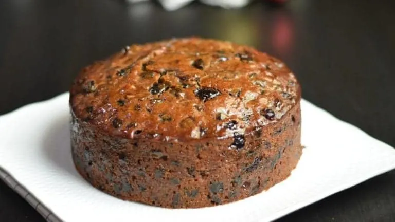

Christmas Cake

Description
This Christmas cake recipe will help you make soft and moist fruit cake in an easy method.
This is one of the simplest and easiest version of making a traditional fruit cake.
Ingredient
- Plain flour: 228g or 1 and 3/4 cups(loosely packed)
- Mixed spice: 1 tsp
- Cinnamon powder:1 tsp
- Baking powder:1 tsp
- Salt:1/2 tsp
- Eggs (medium): 3
- Vanilla Extract (optional):1 tsp
- Soft dark or light brown sugar: 100g or 1/2 cup
- Mollasses /if you don’t have molasses you can use brown sugar : 3 tbsp
- Butter: 226g or 2 sticks or 1 cup
- Dried mixed fruit: 600-700g(you can use dry fruits of your choice and can choose candied peels or glazed cherries or nuts according to your preference)
- Zest of 1 Lemon
- Zest of 1Orange
- Water: 180ml or 3/4 cup
Steps
- Boil the dry fruits In a medium saucepan, combine the butter with the raisins, cranberries, brown sugar,molasses and water and bring to a boil. Simmer over moderately high heat for 3-4 minutes, stirring occasionally. Remove from the heat and let stand for 45 minutes or until it is cool.
- Add all the rest of ingredients Add the eggs (lightly beaten) and vanilla extract (optional) and the nuts. Add in the flour mix which is Flour+Baking powder+Salt+Ground spices+Zest of orange and lemon.I didn’t add the spices and the zest of lemon and orange into the boil mix because we need to preserve the fresh smell of those spices and that of lemon and orange. The taste of a fruit cake is mostly the aroma of that cake 🙂 Mix everything together, just until everything is well incorporated.
- Bake the boiled fruit cake Transfer the batter into the prepared pan.7 inch pan / 8 inch pan will work. Bake in the center of the oven @ 320F for about 75-90 minutes, until a toothpick inserted in the center comes out clean. Large baking tray (8 inch) will take slightly less baking time. Let the cake cool completely. Unmold the cake and transfer to a serving platter. This fruit cake is best to serve the next day.The flavor and texture of cake improves a lot with that time. The cake may seem buttery and crumbly and less flavorful if we cut it immediately it is cooled. This last minute fruit cake is so flavorful and has a very soft and moist texture even though it is a fully packed dense fruitcake. It is not a necessary thing to season this fruit cake before serving.But it’s all your preference and if you want to age or season the fruitcake, you can do it so.In that case, you need to make this fruit cake, in advance so that you have enough days to feed the fruit cake with alcohol.